Tabbi! is a gamefied productivity app that encourages users to work under the incentive of providing a nice, lavish life for their newfound Tabby cat. Ideally, users would be able to gain money by setting timers, increasing productivity in real life, and use their funds to purchase upgrades for their cat.
Resonance: Tune Your Mind
A music emotion recognition app designed to personalize your listening experience through advanced audio analysis and user emotional profiles—tune your mind with Resonance!
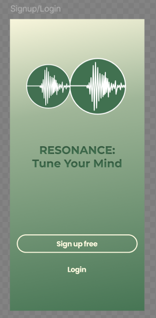
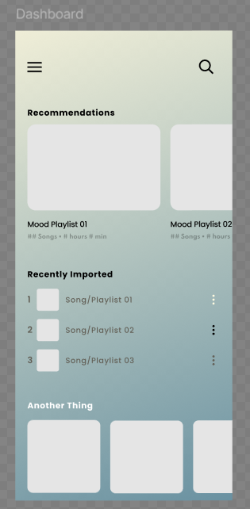
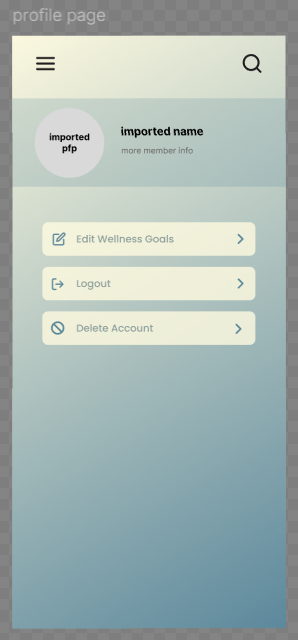
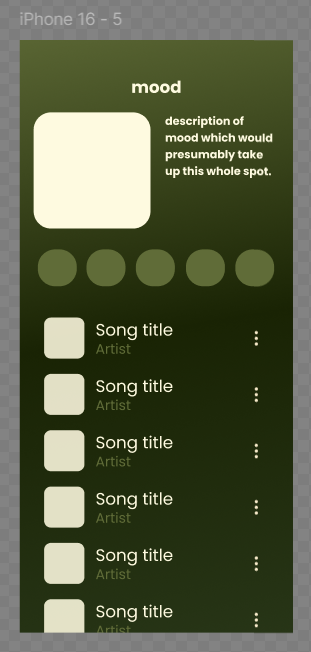
Design mock ups using Figma, created by my partner UI lead and I.
Nostalgify
Nostalgify is a mobile app that lets users capture and organize photos tied to their favorite Spotify songs, playlists, and artists—preserving memories through music. Users can sign in with Spotify, view currently playing tracks, save photos by song, explore their library, and customize themes via the profile page.
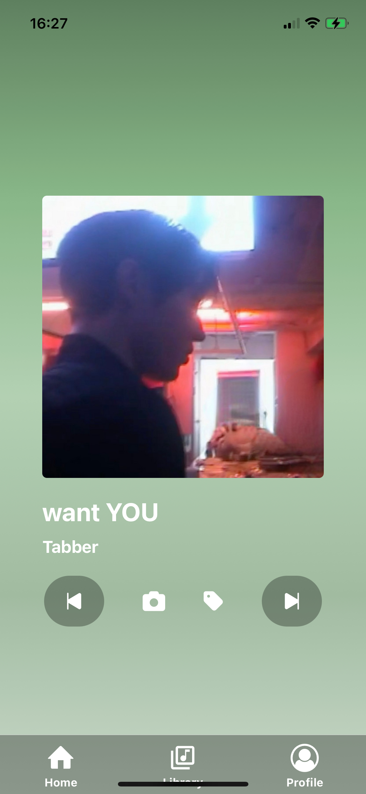
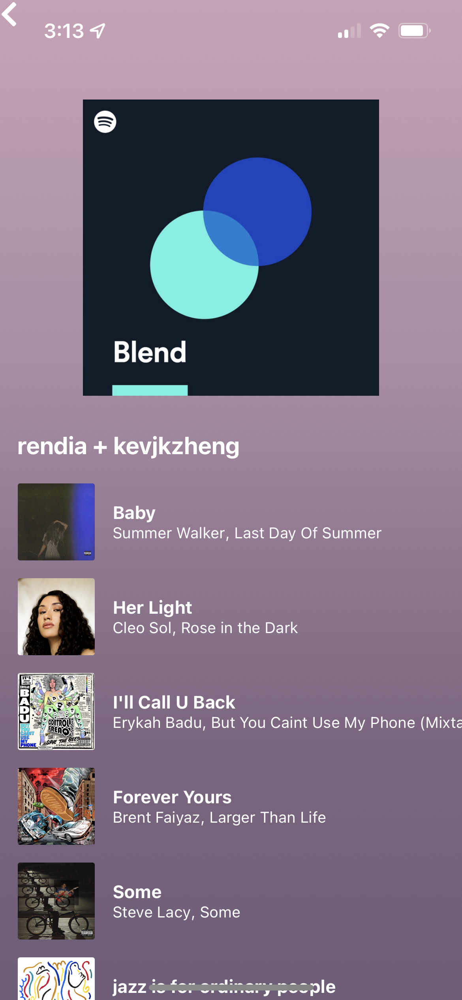
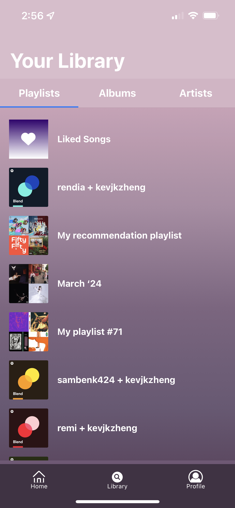
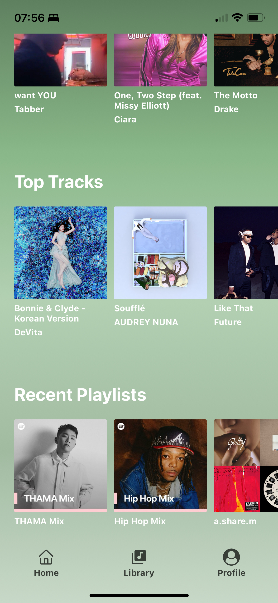
Final product screenshots, profile page done by me.
Hacks - Tabbi!
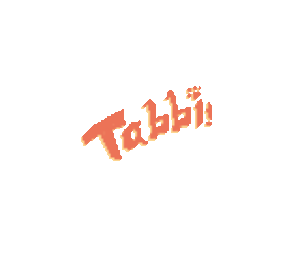
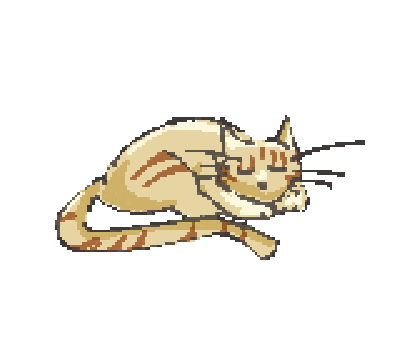
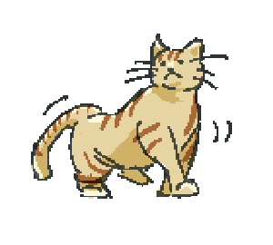
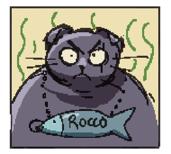
The final product would also allow for users to add friends, letting them foster a bigger work environment so they can end their shifts with more coins! They would even get a tutorial from a street cat that never got a home: Rocco. While this project has been put on the back burner, this is definitely something I aim to fully flesh out after graduation.
I provided the prompt, lead the team, and helped with art on this one!
Hacks - Flu-Int
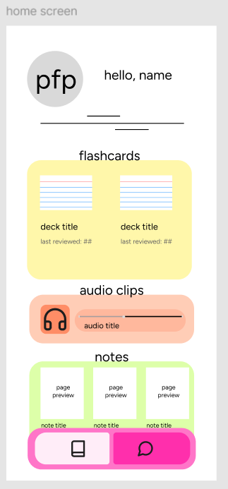
Flu-Int is an all-in-one study tool for language learners using the Language Acquisition method. This follows the philosophy that adults can learn languages more effectively by taking the same approach that babies do, but making it more efficient! While babies have no concept of what study and repetition is, adults do.
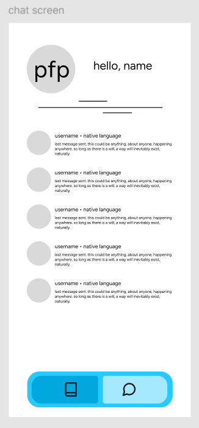
The main goal with this app is to incorporate the most important aspects of language learning in one place. Our key points were immersion, repetition, and feedback. We aim to not only provide a place with effective study tools, but also bring together learners and natives alike.
I provided the prompt, figma mock ups, and the frontend code for this project.